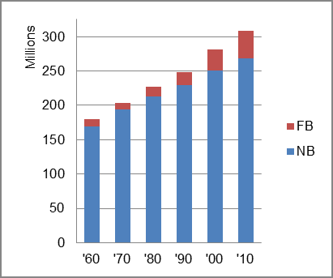

How much of the overall population change is the result of immigration?
These questions are answered below using U.S. Census Bureau data and some calculations.
United States: Population 1960-2010 
This chart shows that the U.S. population increased from 179,323,175 in 1960 to 309,349,538 in 2010. That was an increase of 72.5 percent.
The foreign-born (FB) population increased from 9,738,091 in 1960 to 39,955,854 in 2010. That was an increase of 310.3 percent. The foreign-born share changed from 5.4 percent to 12.9 percent.
The share of the overall population that was native-born (NB) increased by 58.5 percent.
What is more difficult to find is the share of population change that results from immigration.
The Census Bureau periodically issues data collected from the annual Current Population Survey (CPS) that identifies population change from:
The NIM category, however, understates the impact of immigration on population change because immigration tends to add a dsproporionate amout births to the B-D category. This is because a much larger share of immigrants is in the child-bearing age, immigrants on average have larger families, and fewer immigrants are in the older population reaching the end of life.
We, therefore, offer a perspective that reflects how much more immigration may be influencing population change. This is done by adjusting the B-D data to reflect just births and deaths among the native-born population and not the foreign-born population's higher birth numbers and lower death numbers. This calculation is, of course, only illustritive and not a precise measurement. We can demonstrate this effect with two charts for the nation.
The first chart shows the population change factors for three periods adjusted for annual average amounts. Because domestic migration among the states balances out at zero for the nation, NDM does not appear in these charts.. Natural change (B-D) accounted for about two-thirds of the average annual change in population in each period, and net immigration (NIM) accounted for the other about one-third of the change.
The second chart shows the same data but with an adjustment to reflect moving the B-D effects of the immigrant population from B-D to NIM. In it, the population effect of net immigration (NIM) has consistently been the major factor in population change, and, as immigration has increased over time, it most recently has accounted for nearly three-fourths of the total change.
United States: Sources of Population Change 1990-2013 United States: Sources of Population Change (Adjusted) 1990-2013
B-D NDM NIM B-D NDM NIM 90-'99 68.0% 0.0% 32.0% 90-'99 41.1% 0.0% 58.9% 00-'09 63.9% 0.0% 36.1% 00-'09 33.8% 0.0% 68.2% 10-'13 63.8% 0.0% 36.2% 10-'13 25.3% 0.0% 74.7%
Similar data are available for the nation's metropolitan areas listed by state or alphabetically.